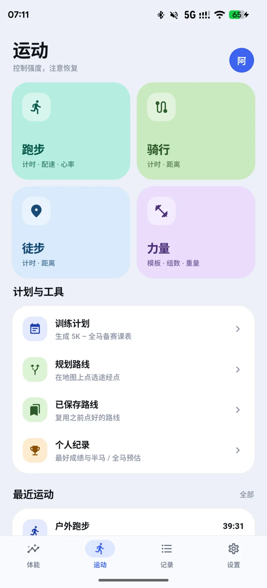
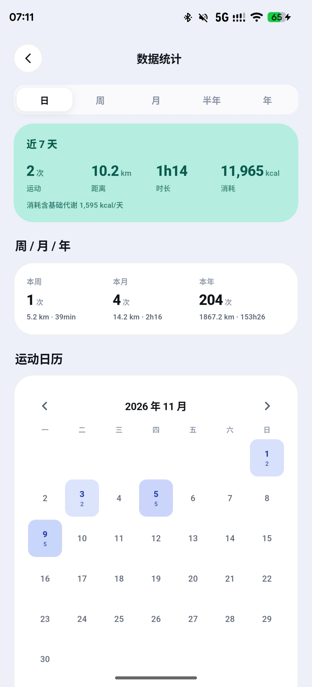

能做什么
本地优先。不需要账号，没有遥测。
准备度与每日看板
由 HRV、睡眠、静息心率、皮肤温度、压力与恢复情况算出准备度评分； 缺失的指标会自动剔除，其余权重重新归一化。
华为手表同步
经典蓝牙 RFCOMM + HiChain 认证，配对流程参照 Gadgetbridge 的公开文档。 睡眠、心率、压力、HRV、血氧和运动记录增量拉取。
运动分析
地图轨迹、心率曲线、分段、海拔、跑步动态、训练负荷、训练计划， 支持 GPX/TCX 导出，以及把整场运动生成一张长图分享。
地形地图
Protomaps PMTiles 底图带绿色高程着色，叠加 DEM 山体阴影与服务端实时计算的等高线。 可倾斜到 45° 获得接近立体的视角，长按图层即可切换。
数据迁移与导出
一次性导入旧版数据库、运动轨迹、个人资料、目标与华为配对信息； 随时导出 GPX/TCX，数据不会被锁在应用里。
可选的自托管同步
账号制云端备份与实时轨迹分享，后端由你自己部署。 在填写服务器地址并登录之前，不会向外发送任何数据。
截图
来自 Android 构建，设备数据为演示用示例数据。



安装
Android 7.0 及以上，arm64。
- 下载签名后的 APK，在手机上打开安装。
- 允许你使用的浏览器或文件管理器安装应用。
- 授予定位、后台定位、附近设备与通知权限，轨迹记录和手表同步才能持续运行。
- 在设置 → 华为手表里配对；应用会引导完成华为认证密钥流程。
演示版 APK 只把作者自己的服务器用于更新检查和地图瓦片。 请不要拿这个实例同步真实健康数据 —— 请自己部署一份服务端。
从源码构建
Flutter 3.47+、Rust 1.85+、JDK 21、Android SDK 35。
git clone https://github.com/monkey-wenjun/vitaloop-app
cd vitaloop-app
flutter pub get
flutter gen-l10n
flutter build apk --release \
--target-platform android-arm64 --split-per-abi自托管服务端
单个静态 Rust 二进制，运行时零第三方 crate。
- 账号 — 邮箱 + 密码，加盐 SHA-256 迭代 60k 轮，30 天 Bearer 会话。
- 同步 — 全量健康快照加只追加的增量日志，读取时合并。
- 运动 — 按账号缓存，提供列表与详情接口。
- MCP — 只读的 Model Context Protocol 接口， AI 助手可以用同一个 token 查询同一份数据。
- 地图 — PMTiles 样式/瓦片代理、DEM 瓦片， 以及用公开高程数据现算的等高线瓦片。
部署
Docker Compose 会编译 musl 二进制，并运行在 scratch 镜像里。
git clone https://github.com/monkey-wenjun/vitaloop-server
cd vitaloop-server
docker compose up -d # 127.0.0.1:8793，数据卷 vitaloop-data
然后在前面套一层 HTTPS，把应用指向你自己的域名：
设置 → 账号 → 服务器，或构建时加
--dart-define=VITALOOP_CLOUD_URL=https://sync.example.com。
隐私模型
公开源码与构建产物不包含默认云服务、星历服务、API Key 或签名密钥。
默认只在本地
健康数据写在设备的 SQLite 里。不登录也能记录、分析、迁移和导出。
云端需要主动开启
在填写服务器地址并登录之前，同步是关闭的。服务端只保存加盐后的密码哈希，不保存密码本身。
没有追踪器
默认构建里没有广告 SDK、没有产品遥测，也没有第三方统计。